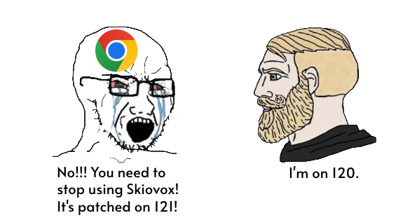

It's February 26, 2024. Bypassi posted exactly 300 days ago about
his discovery of LTMEAT. I haven't gotten a
chance to use it, though. Chess move? Nah.
I got a chance to use it in Skiovox, and it's
been many days since. Skiovox is ancient, and I'm
starting to think worrisome of Bypassi. Sundar
is likely headed to sniff like a dog, which is probably
the right thing to do. Bypassi's desired username is already
taken by some random guy, and don't say people don't know what
his actual username is. It's bypassiwastaken, and Sundar
already spent his life trying to hunt down famous Discord
people, like Aka-But-Nice, Nebelung, and Bypassi. But, believe it
or not, time is running down the drain for Skiovox.

There has been a big advantage in kiosk exploits because you don't
only have access to public web URLS, but furthermore, private low-level
Chrome URLS like famously chrome://kill and chrome://hang, but also chrome://crash.
This is especially great for extensibility, like you might want to install
an extension like Tampermonkey or uBlock Origin. But the only problem is, these
exploits are seen as the most patchable. There is a rise of sign-in screen exploits
that you may want to try.
Uh, I'm sorry?
Hell yeah!
Brandon421-ops originally posted in his deleted Exploits-And-Hacks repo
that you can have an unblocked browser window on the sign-in screen
via the ChromeOS webview. This is especially nice when you make helpers
to make the browsing experience as smooth as possible.
Sources
SWAB
Baghdad